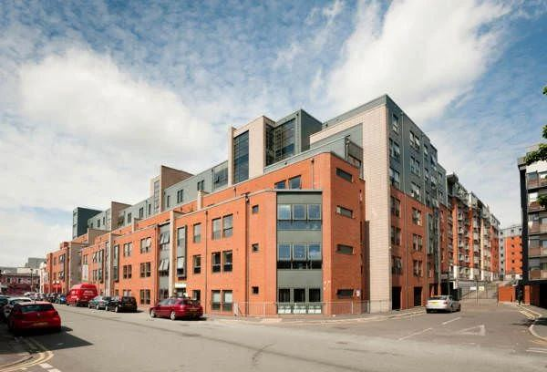
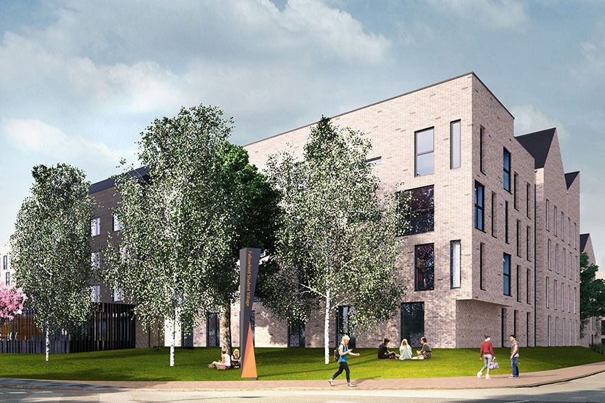
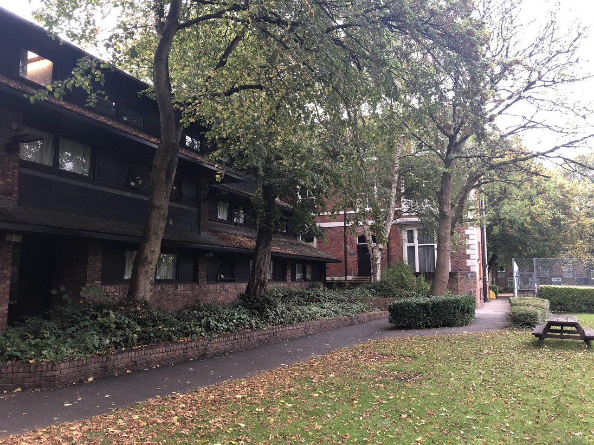

Home
About
Skills
Accommodation
Reviews
Accommodation
Every international student will be provided with accommodation
· There are thousands of rooms to chose from
· Stable broadband internet connection in every room
· Catered and self-catered variants
· A variety of campuses for accommodation in three areas (City, Fallowfield, Victoria Park)
City

For students who love being at the centre of the action, a student home in Manchester city centre is ideal. With plenty of high-rise flats and apartment buildings dotted around the streets, the area is perfect for spacious 1-bedroom, 2-bedroom or 3-bedroom student flats. The city centre is jam-packed with everything you need as a student. If you’re heading to the Northern Quarter for some lunch, try Café North or Walrus Canteen and Bar for some deliciously offbeat dining. The streets nearby are lined with pubs and bars to discover, so you’re sorted for an evening out exploring the local digs. The city centre is well connected to Manchester’s offerings, including major football clubs Manchester United and Manchester City. The trams and buses across the city will get football fans around easily, as well as students wanting to visit the many cultural attractions.
Halls of residence:
· Denmark Road
· George Kenyon Hall
· Horniman House
· Weston Hall
· Whitworth Park
Fallowfield

Fallowfield is undoubtedly one of the most popular student areas in Manchester. Students from all universities tend to flock to the neighbourhood, which is densely populated with students every year. Fallowfield is located just three miles from the city centre, so residents are just a short bus or tram journey into the hustle and bustle of the city. Student homes in Fallowfield are surrounded by a vibrant student atmosphere, and the area is renowned for its lively social scene. The famous Curry Mile runs through the district, which is jam-packed with tasty eateries and popular drinking holes. From chains like Domino's Pizza to independent outlets such as the Beer Studio you’ll have plenty to explore.
Halls of residence:
· Ashburne Hall
· Oak House
· Richmond Park
· Sheavyn House
· Unsworth Park
· Uttley House
· Woolton Hall
Victoria Park

Student homes in Victoria Park are centrally located among Manchester’s student suburbs. With the University of Manchester just a short walk away, and student suburb Rusholme nearby, the area has a buzzing student atmosphere. Plus, getting around Manchester from Victoria Park is super easy thanks to the city’s excellent public transport links. Students in Victoria Park are bound to spend hours exploring what the area has to offer. The popular Wilmslow Road, or Curry Mile, is found on the outskirts of Victoria Park. This famous foodie hotspot is jam-packed with takeaways and diverse bistro options, as well as an abundance of drinking holes to grab a beer. There are a number of parks and green spaces in Victoria Park. Whitworth Park and Birchfields Park are located nearby, and Platt Fields Park even has a pond to explore. These spots are ideal for a kick-around with some mates or to host a summer BBQ on a warm summer day.
Halls of residence:
· Brook Hall
· Burkhardt House
· Canterbury Court
· Daisy Bank Hall
· Dalton-Ellis Hall
· Hulme Hall
· St Anselm Hall